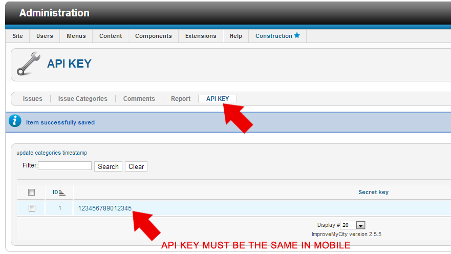
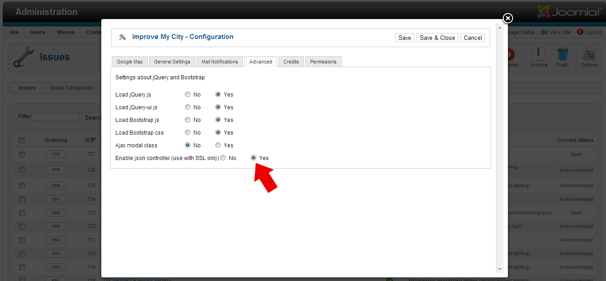

The Android mobile version of the web-based ImproveMyCity application
ImproveMyCity-Mobile is written with Eclipse using the android developer tool (ADT) and Android SDK with Android 2.3.3 – API 10. In order to compile the app you need to follow these steps in the correct order a) install the "Google Play Services" plug-in via Android SDK Manager; b) import the "google-play-services_lib" library project into your workspace; and c) Import the IMC mobile project into your workspace. Then link IMC project to the google-play-services_lib by "Project">"Properties">"Android">"Library">"ADD".See FAQ for instructions on how to do it. The mobile application is developed to communicate with the back-end Joomla component of ImproveMyCity web application. So in order to achieve the full functionality of the mobile app you need also to follow the instructions for installing ImproveMyCity.
In order for ImproveMyCity-Mobile to work for your municipality, several parameters should be changed. These parameters are located in four places:
In IMC_Store.Constants.java you should modify the following parameters:
1. Server address. It can be textual or numeric (XXX.XXX.XXX.XXX), e.g. ServerSTR = "smartcitydemos.urenio.org";
2. Server inner path. Inner path (concatenated after ServerSTR) where the PHP scripts are stored on the Server, e.g. phpExec = "/";
3. Server path of issues’ images. Inner path (concatenated after ServerSTR) where the images are stored on the Server, e.g. remoteImages = "/";
4. Encryption key for the secure transmission of IMC password. It should match the one in ImproveMyCity joomla component. The default value is EncKey = "1234567890123456";
5. (Optional) Usage analytics key for Flurry analytics that monitors usage of application see www.flurry.com. Flurry_Key = "your_key_goes_here”;
In raw/polygoncoords.txt
6. Geographical limits (polygon) from where issues can be sent are defined as from a sequence of Longitude-Latitude coordinates. Coordinates are separated with white space, e.g. "23.1094 40.5789 23.1111 40.5781 23.1126 40.5774 23.1094 40.5789". A point is defined from two coordinates. The polygon consists of all points. The polygon should be closed, i.e. first point should match last point. Latitude and Longitude can be obtained by from GoogleMaps by right-clicking on the desired points and selecting “What is here”. A better way is to generate a polygon from Google-Earth app and export it as a kml file (remove the altitude information ",0");
In AndroidManifest.xml
7. Google map api key. You should have two map api keys: 1) for debugging related to your android debug key; 2) for release version related to your android release key. See in android developer here about how to generate map api keys according to your android debug or release key. Only Google Maps Android API v2 is supported.
After obtaining the Google map api key it should be placed as shown below:
android:name="com.google.android.maps.v2.API_KEY" android:value="your_key_goes_here"
In res/xml/myprefs.xml
8. Default UI language. In order to change the default user language changes in two files should be made
1. res/xml/myprefs.xml
(line 27). Define the Menu language by setting the android:defaultValue parameter, e.g. android:defaultValue="en - English". Default is English ("en - English"). Greek is also supported ("el - Ελληνικά"). See how to add a new language if you want to add a language that is not currently supported.
2. IMC_Store/Constants_API.java
change the variable
public static String DefaultLanguage = "en - English";
with values as in step 1.
9. Usage analytics by using Flurry library is by default “true”. It can be modified in line 58, e.g. android:defaultValue="false"
Compile the application and you are done!
The only setting is to define the exact same API KEY in Joomla administrator as shown in the screenshot
Also make sure you have enable json controller on IMC Options
